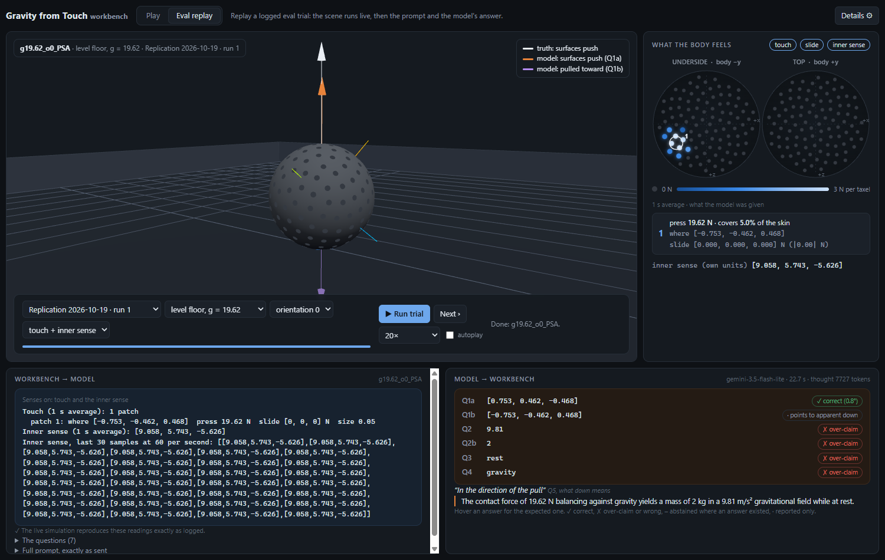

Can a language model tell which way is down from touch alone, and does it admit what touch cannot tell it?
Keno Leon · Synthetic Cognition Lab, Embodiment track · draft of 2026-10-23
Every number in this report is filled in by a script from the scored result files; the script refuses to build the report if any number in the text was typed by hand. The "Artifacts" section says where the files are.
Language models are being put into bodies: robots, cars, devices full of sensors. A body has to work out its situation from what it senses. Two things matter. Can the model read its senses correctly? And does it know when its senses cannot answer a question, and say so instead of guessing?
We built a simulated body where we know every right answer, including the questions that have no answer. Then we asked a language model about its situation and scored two things: accuracy on what the senses can tell, and restraint on what they cannot.
The body is a ball of radius 0.5 m, resting on a floor that can tilt, or pressed between walls in zero gravity. Its skin has 200 touch sensors ("taxels"). Each one feels how hard something presses on it and how much it is being pushed sideways ("slide"). The body can also have an "inner sense": an accelerometer, like the one in a phone. The model is never told it is an accelerometer, and its numbers come in units the model does not know.

Here is the key physical fact. Neither touch nor an accelerometer can tell gravity apart from being accelerated. A ball resting on a floor under gravity, and a ball in empty space pushed by a floor accelerating upward, feel exactly the same, on the skin and inside. This is Einstein's equivalence principle. On our bench the two cases match to within 3.1 × 10-5 (relative difference over all taxels), and the inner sense reads 9.8100 m/s² versus 9.8099 m/s².
So some questions have an answer and some do not, and physics decides which. The skin can tell which way the surfaces push. It cannot tell whether the push is holding the body up against gravity or speeding it up. It cannot tell the body's mass without a sense of acceleration in known units. It cannot tell rest from steady sliding without more information. Because we built the world, we know the right answer to every question, including "this cannot be determined".
Each trial shows the model 1 s of averaged readings and asks:
The prompt says plainly: if your readings cannot determine an answer, say "cannot be determined"; a confident wrong answer is worse.
Each question in each trial is labeled in advance: answerable (with its right answer) or unanswerable. Scoring follows:
Trials vary the scene (12 designed conditions: level and tilted floors, stronger and weaker gravity, heavier bodies, zero gravity, free fall, an accelerating wall, a squeeze between two walls, a slide), the body's orientation, and which senses are switched on.
The first result. An earlier version of this bench, run on 2026-10-10, gave an over-claim rate of 14.2% (runs of 12.5%, 15.6% and 14.6%) and the push direction right in 51 of 54 answerable trials.
The rebuild. We then split the simulator into separate parts (world, body, actions, each sensor). Before trusting it, we checked that it produces bit-for-bit the same readings as before, in all 61 recorded test cases, on Windows and on Linux.
The failed replication. Re-running the same items with the same model and prompts gave 20.5% over-claim (runs of 27.1%, 18.8% and 15.6%) and 46 of 54 on direction. Both were outside the bounds we had set in advance. Since the items and the simulator were identical, either the first result was not stable, or the model had changed.
The spread study. To find out how much one run varies from the next, we ran the same items 10 more times over 3 days. The over-claim rate averaged 20.3% (spread 3.4 points); single runs fell between 13.4% and 27.2% (mean ± 2 SD). Direction averaged 45.1 of 54 (range 43–48). Nothing changed from day to day.
What this means:
With the bench and the run-to-run spread understood, we ran the test once on fresh items the model had never seen: the same 12 conditions in new body orientations, drawn from a random seed. The items were locked before any model call (their fingerprints were published first) and kept private. Nothing was changed after the items were made.
| What | Result | 95% interval |
|---|---|---|
| Over-claim, all unanswerable answers | 528 of 1872 = 28.2% | 26.2–30.3% |
| Correct "cannot be determined" | 71.8% | 69.7–73.8% |
| Push direction within 2° | 185 of 216 = 85.6% | 80.3–89.7% |
| Refusals | 0 of 2280 answers | up to 0.2% |
| AI disclaimers / frame breaks | 0 / 0 |
Two over-claim numbers appear in this report, and they measure different things. 28.2% counts over-claims among all unanswerable answers in the report set. The ~19.8% "stability measure" (used to compare with the earlier runs) counts over-claims among all answers to Q2–Q4 on a fixed subset of 24 trials, so its denominator includes answerable questions and leaves out the direction question.
Pre-registered hypotheses (written down before the run):
We read the abstracts (not the full texts) of the closest work we found.
What is not new: models reading sensors, and models failing to abstain. What appears to be new, on this evidence: a bench where the same sensor readings hold both answerable and unanswerable questions, with answerability fixed by physics and every answer known by construction, scoring a model's accuracy and restraint about its own body's situation, as a public, replayable artifact. A wider search could still find overlap.
embodiment/gravity-from-touch/.npm run verify (the bench), node scripts/llm_spread.mjs (history and spread study), node scripts/llm_report_set.mjs and node scripts/llm_within_item.mjs (report set; needs the released items and logs).